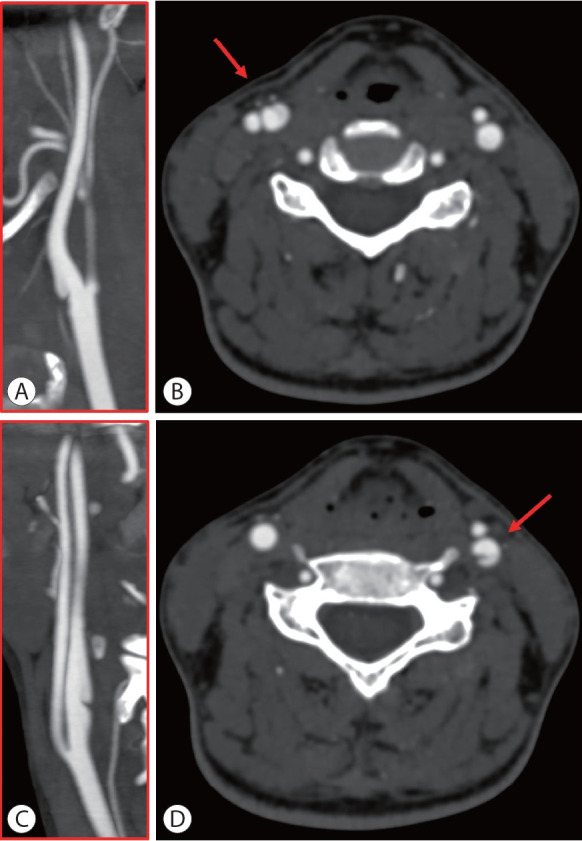
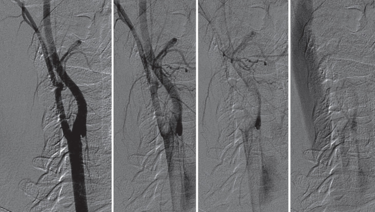
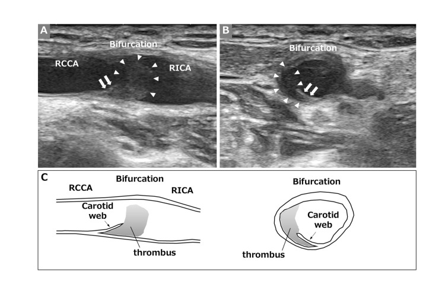
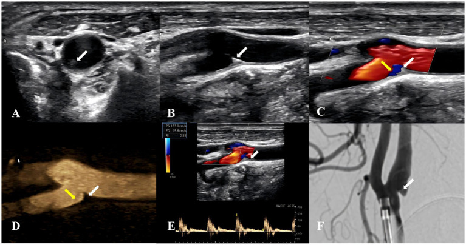

270 — Carotid web: dải xơ mặt sau hành cảnh trong ở người trẻ đột quỵ / Carotid web (intimal fibromuscular dysplasia of the carotid bulb)
Tags: pattern:dai-xo-long-mach pattern:septum pattern:o-ur pattern:nhoi-mau-thuyen-tac pattern:huyet-khoi vung:dong-mach-canh vung:dau-co vung:nao score:SCORE-WEB protocol:CTA-co-can-quang protocol:DSA protocol:SA-Doppler protocol:MRI-mang-mach incidentaloma:carotid-web
Mức chắc chắn (certainty): tổng hợp y văn (literature synthesis) — 1 tổng quan có bảng ngưỡng và hình CTA/DSA/US/MRI (J Stroke 2025, PMC12152460, CC BY-NC), 1 đoàn hệ 48 ca chẩn đoán bằng DSA (Front Neurol 2026, PMC13470664, CC BY), 1 đoàn hệ 9.220 ca CTA (Front Neurol 2026, PMC13318593, CC BY), 1 thang điểm SCORE-WEB 126 tổn thương (Front Neurol 2026, PMC13193918, CC BY), 1 đoàn hệ tiến cứu 105 ca web không triệu chứng (Front Neurol 2026, PMC13683218, CC BY), 1 ca "huyết khối nằm trên web" (Cureus 2024, PMC11584331, CC BY) và 1 nghiên cứu siêu âm đa phương thức (Front Neurol 2026, PMC13341435, CC BY). Không có ca nguyên văn của nhóm — 4 ca trong quiz là ca công bố, lấy nguyên văn từ bài gốc.
Câu chốt: carotid web không phải "mảng xơ vữa nhỏ" mà là một dải xơ bẩm sinh/mắc phải (~1 mm) bắc từ mặt sau hành cảnh trong, tạo túi ứ — nơi máu xoáy, đọng, sinh huyết khối và bắn cục máu lên não. Ba con số phải thuộc: web hiện diện ở ~1,2% người bị đột quỵ nói chung nhưng 9,58% đột quỵ thể ẩn (ESUS) và 13% ở người < 60 tuổi đột quỵ thể ẩn; tỉ lệ tái phát đột quỵ 17% trong 2 năm so với 3% ở người không có web (HR 5,0) — và 35,3% web bị bỏ sót ngay trong lúc lấy huyết khối.
1. Tổng quan bệnh học – cơ chế hình ảnh
1.1 Bệnh học: xơ hóa NỘI MẠC, không phải mảng xơ vữa
- Web là thể loạn sản cơ xơ (fibromuscular dysplasia, FMD) típ nội mạc (intimal FMD) — khác hẳn thể trung mạc "chuỗi hạt" (medial FMD) thường gặp ở đoạn xa ICA cổ. Mô bệnh của 9 ca (dẫn trong PMC12152460): tăng sinh nội mạc khu trú, lệch một bên, gồm tế bào hình thoi (cơ trơn mạch máu di chuyển vào nội mạc) nằm trong chất nền ngoại bào lỏng, nhiều nhầy; 6/9 ca có mất tế bào cơ trơn trung mạc thay bằng chất nhầy ngay dưới web — tức tổn thương ăn sâu qua trung mạc, không chỉ là "nếp gấp nội mạc".
- Vì sao có huyết khối: 3/9 ca có huyết khối mới bám trên web, 1/9 có huyết khối cũ nằm trong khối tăng sinh nội mạc. Huyết khối lấy từ động mạch nội sọ ở bệnh nhân web có thành phần fibrin – tiểu cầu – hồng cầu (6–46% thể tích), thâm nhiễm bạch cầu, và không có khe cholesterol — tức huyết khối động mạch–động mạch, không phải mảnh xơ vữa.
- Vì sao đậm độ trên CT lại "nhạt": web là mô xơ non, nhiều nước, không vôi hóa, không mỡ, không xuất huyết → trên CTA là dải giảm đậm độ mảnh (~1 mm), KHÔNG vôi hóa; trên MRI T1 không tăng như mỡ, không có tín hiệu máu bán cấp. Đây là điểm khác gốc với mảng xơ vữa (vôi hóa, lõi mỡ, xuất huyết trong mảng) — và cũng là lý do web không thấy trên X-quang/DUS thường quy nếu không nhìn đúng mặt phẳng.
- Vì sao dòng máu sinh huyết khối: web chia lòng mạch thành lòng thật + túi (pouch). Mô phỏng động học dòng (CFD) và 4D-flow cho thấy trong túi có vùng xoáy, ứng suất trượt thành mạch thấp (low WSS) và chỉ số trượt dao động cao (high OSI) — đúng điều kiện hình thành huyết khối tĩnh mạch kiểu Virchow. Hệ quả thực hành: DSA thì tĩnh mạch vẫn còn cản quang đọng trong túi khi tĩnh mạch cảnh đã đầy thuốc — dấu hiệu ứ trệ chứng minh túi là nơi sinh huyết khối, thấy được ngay cả khi hẹp rất nhẹ.

Hai bên động mạch cảnh của cùng bệnh nhân. (A, C) MIP/MPR mặt phẳng cắt dọc: dải xơ mảnh nhô vào lòng ở mặt sau hành cảnh trong, vị trí khác nhau hai bên. (B, D) Lát cắt ngang nguồn: vạch mảnh chia đôi lòng mạch (mũi tên đỏ) — "dấu hiệu hai lòng" giả. Nguồn: Zedde M et al., J Stroke 2025 (PMC12152460), CC BY-NC.1.2 Vì sao web bị bỏ sót — vật lý của mặt phẳng cắt
- Web chỉ là một lá mỏng ~1 mm nằm ở mặt sau hành cảnh, nơi dòng cản quang xoáy và hòa trộn mạnh nhất. Trên lát cắt ngang đơn thuần, lá mỏng có thể nằm trong mặt phẳng lát cắt (partial-volume) → biến mất; trên mặt phẳng cắt dọc đơn thuần, lá mỏng chồng lên thành mạch. Vì vậy tiêu chuẩn thực hành là phải thấy trên CẢ hai mặt phẳng (dọc + ngang nguồn), và chỉ khi có vách ngăn (septum) trên lát ngang mới gọi là web.
- Độ tin cậy giữa người đọc của CTA cho web là κ 0,78–0,93; CTA với DSA κ 0,92, nhưng siêu âm với CTA chỉ κ 0,633 — nghĩa là CTA là cửa chính, siêu âm là cửa phụ.
- "Tổn thương nhô nhỏ" ≠ web: phân tích phụ của MR CLEAN tách riêng các nốt nhô nhỏ không có vách ngăn và thấy chúng phân bố đều ở bên có và không có triệu chứng → không liên quan đột quỵ. Đây là lý do phải đo và mô tả hình thái, không chỉ "có/không".

Bơm động mạch cảnh chung, chụp nghiêng, từ thì động mạch (trái) sang thì tĩnh mạch (phải). Khi tĩnh mạch cảnh đã đầy cản quang, túi của web vẫn còn ngấm — bằng chứng trực tiếp của ứ trệ dòng trong túi, cơ chế sinh huyết khối. Nguồn: Zedde M et al., J Stroke 2025 (PMC12152460), CC BY-NC.1.3 Số liệu định lượng phải thuộc
| Đại lượng | Con số | Nguồn |
|---|---|---|
| Tỉ lệ web cùng bên ở người đột quỵ trên lều | ~1,2% | PMC12152460 |
| Tỉ lệ web ở đột quỵ thể ẩn (ESUS) trên lều — gộp | 9,58% (KTC 5,62–15,85) | PMC12152460 |
| Tỉ lệ web gộp ở đột quỵ thể ẩn < 60 tuổi (3.192 bệnh nhân) | 13% (7–22%), I² = 66,1% | PMC12152460 |
| Nguy cơ tương đối web cùng bên so với đối bên | RR 2,5 (1,5–4,2); ở người trẻ thể ẩn 3,0 (1,6–5,8) | PMC12152460 |
| Web đối bên (không triệu chứng) | RR 1,50 (0,94–2,40) — không kết luận là nguyên nhân | PMC12152460 |
| MR CLEAN/MR CLEAN Registry: web có triệu chứng trên CTA lúc vào | 30/3.439 (0,87%); web không triệu chứng 6/3.438 (0,17%) | PMC12152460 |
| Tái phát đột quỵ 2 năm ở web cùng bên so với không web | 17% (5/30) vs 3% (5/168); HR 5,0 (1,4–17,3); HR hiệu chỉnh 4,9 | PMC12152460 |
| Tái phát cùng bên | 4/5 ca tái phát; HR 9,9 (1,8–54,2) | PMC12152460 |
| CAROWEB (202 ca web có triệu chứng) | tuổi 50,8 ± 12,2; nữ 62,9%; đột quỵ 91,6%; tắc mạch lớn nội sọ 71,8%; nhồi máu mạn cùng bên 47,5% | PMC12152460 |
| Web bị bỏ sót trong lúc lấy huyết khối (CAROWEB) | 30/85 = 35,3% | PMC12152460 |
| Điều trị dự phòng cấp hai trong CAROWEB | can thiệp 55,6% (stent 80, mổ 30); can thiệp liên quan nhồi máu mạn cùng bên OR 4,24 (1,27–14,2) | PMC12152460 |
| DSA 48 ca: huyết khối dưới web | 22/48 = 45,83%; đột quỵ thiếu máu cấp 18,75%; web hai bên 3/48 | PMC13470664 |
| DSA 48 ca: tái phát cùng bên | thuốc đơn thuần 1/34; can thiệp nội mạch 0/6; mổ 0/1 (cỡ mẫu nhỏ, không suy ra nhân–quả) | PMC13470664 |
| CTA 9.220 ca: tỉ lệ web | 0,37% (34 ca/42 web); 88,1% tại chỗ chia đôi động mạch cảnh chung; hẹp nhẹ 1–30% 64,7% | PMC13318593 |
| CTA 9.220 ca: đường kính lòng tại web — nhóm nhồi máu vs không | 8,97 ± 2,34 vs 6,80 ± 1,90 mm (p = 0,008) | PMC13318593 |
| Ngưỡng hình thái dự báo có triệu chứng | dài ≥ 3,1 mm: Se 78,6%/Sp 80,6%, OR 15,2; tỉ lệ web/hành ≥ 0,50: Se 85,7%/Sp 83,3%, OR 30,0; góc ≤ 90,1°: OR 5,00 | PMC12152460 |
| SCORE-WEB (0–11 điểm, 126 tổn thương) | AUC 0,824; ≥ 7 điểm: Se 54%/Sp 97%, PPV 97,4%/NPV 44,4% | PMC13193918 |
| Kháng kết tập tiểu cầu ở web không triệu chứng (105 ca, 31 tháng) | đột quỵ 3,51 vs 5,16/100 người–năm; HR 0,755 (0,215–2,653; p = 0,642) → không chứng minh lợi ích | PMC13683218 |
| Khuyến cáo can thiệp ở web có triệu chứng | ESVS 2023: mức IIb, bằng chứng C (stent so với thuốc) | PMC12152460 |
2. Mẫu hình + chẩn đoán phân biệt theo vị trí (Gamut)
- Cách đọc: trước khi gọi "carotid web", trả lời 4 câu: (1) tổn thương ở mặt nào của hành cảnh — sau hay trước/bên? (2) có vách ngăn chia đôi lòng trên lát ngang không? (3) có vôi hóa/lõi mỡ không? (4) có ứ cản quang trong túi ở thì muộn không?
- Gamut theo vị trí (từ chỗ chia đôi ra xa):
- Hành cảnh trong, mặt sau, sát chỗ chia đôi → carotid web (vị trí điển hình; 88,1% nằm ngay chỗ chia đôi theo PMC13318593), mảng xơ vữa (thường mặt sau nữa, nhưng có vôi hóa/lõi mỡ), loét mảng xơ vữa (túi rỗng, bờ nham nhở, vôi hóa quanh).
- Hành cảnh trong, mặt trước/bên → mảng xơ vữa non, nốt nhô nhỏ không phải web (không có vách ngăn trên lát ngang; MR CLEAN: không liên quan đột quỵ).
- ICA cổ đoạn xa, hình chuỗi hạt → FMD thể trung mạc; đoạn dài, nhẵn, không vôi, trong trường xạ → hẹp do xạ (260).
- Nón hẹp dài rồi tắc (string sign) hoặc vạt nội mạc → bóc tách động mạch cảnh; có huyết khối trong giả lòng.
- Dải mảnh + khối giảm đậm độ di động trong lòng → huyết khối nằm trên web hoặc huyết khối tự do — bẫy kinh điển (PMC11584331).
3. Bảng so sánh phân biệt (ma trận đối chiếu)
| Thực thể (entity) | Hình ảnh điển hình (CTA / DSA / MRI / SA) | Chốt vào (rule-in) | Chốt loại (rule-out) | Gợi ý xác nhận |
|---|---|---|---|---|
| Carotid web (FMD nội mạc) | Dải mảnh ~1 mm mặt sau hành cảnh, không vôi, nhô vào lòng; lát ngang có vách ngăn chia đôi lòng; DSA thì tĩnh mạch còn đọng cản quang trong túi | Vách ngăn trên lát cắt ngang + dải trên mặt phẳng dọc, cùng vị trí; không vôi hóa; ứ trệ thì muộn | Không có vách ngăn trên lát ngang → chỉ là nốt nhô nhỏ, không quy đột quỵ; không vôi hóa không loại web | CTA 2 mặt phẳng + DSA khi cần can thiệp; MRI thành mạch (dấu "van", ứ cản quang) |
| Mảng xơ vữa | Dày thành không đều, vôi hóa, lõi mỡ, có thể loét; thường ở người > 50 tuổi có yếu tố nguy cơ | Vôi hóa + lõi mỡ + tái tạo dương (positive remodeling) | Không vôi, dải mảnh đơn độc, bệnh nhân trẻ không yếu tố nguy cơ → nghĩ web | CTA đa thì; siêu âm B-mode thấy vôi hóa/dày thành; MRI mảng xơ vữa |
| Loét mảng xơ vữa (ulcer) | Túi rỗng trong mảng dày, bờ nham nhở, hay có vôi quanh miệng túi; có thể giả "móc câu" | Túi nằm TRONG mảng dày có vôi, miệng túi rộng, bờ không đều | Dải mảnh + thành mạch mỏng xung quanh → không phải loét | Phân tích phổ đậm độ, CTA đa thì; đối chiếu MRI |
| Bóc tách động mạch cảnh | Vạt nội mạc + hai lòng (thật/giả), nón hẹp dài, huyết khối trong giả lòng; đau cổ + Horner | Hai lòng có huyết khối trong giả lòng, tổn thương dài, hẹp lan tỏa | Dải mảnh khu trú một điểm, thành mạch xung quanh mỏng, không huyết khối giả lòng | MRI T1 fat-sat thành mạch: huyết khối trong vách tăng tín hiệu; CTA theo dõi |
| FMD thể trung mạc ("chuỗi hạt") | Nhiều chỗ hẹp–giãn xen kẽ đoạn xa ICA cổ, thường hai bên, nữ trung niên | ≥ 2 chỗ giãn xen kẽ, tổn thương dài > 2 cm | Một dải mảnh đơn độc ở hành cảnh → không phải chuỗi hạt | DSA/CTA toàn bộ trục cảnh–sống; tầm soát động mạch thận |
| Hẹp do xạ | Hẹp dài, nhẵn, ít vôi, đúng trường chiếu, tiềm tàng > 1 năm | Tiền sử xạ cổ + tổn thương dài đúng trường chiếu | Dải mảnh khu trú, không tiền sử xạ | Đối chiếu bản đồ liều; xem 260 |
| Huyết khối nằm trên web (lodged thrombus) | Khối giảm đậm độ di động trong lòng, có thể che mất web; CTA trước đó chỉ "hẹp < 50%" | Web lộ ra sau khi huyết khối tan/lấy đi, hoặc dải mảnh thấy ở mặt phẳng khác | Chỉ thấy khối, không thấy dải → chụp lại sau 1–4 tuần hoặc sau lấy huyết khối | Siêu âm lặp lại (khối di động), CTA/DSA sau can thiệp |
- Ảnh ghép đối chiếu: không tạo composite cho bài này vì các ca khác modality và khác bệnh nhân; ghép sẽ gợi ý so sánh không có thật.
4. Protocol chụp + hệ phân độ/điểm chuẩn hóa
4.1 Protocol
- CTA cổ–não (đầu tay): đầu thu ≥ 64 dãy, lát 0,625–1 mm, bước 0,5, 80–120 kV, bơm 50–70 mL cản quang 350–370 mgI/mL ở 4–5 mL/giây, bắt đầu khi đạt ngưỡng 100–150 HU ở quai động mạch chủ; tái tạo MPR mặt phẳng cắt dọc nghiêng (sagittal oblique) dọc trục cảnh + lát cắt ngang nguồn 1 mm — bắt buộc cả hai.
- Đo trên CTA (mm, mặt phẳng cắt dọc): chiều dài web (từ đỉnh tới chân), độ dày web, góc trước web (pre-web angle), diện tích túi, đường kính hành cảnh và ICA xa → tính tỉ lệ web/hành.
- MRI thành mạch (vessel wall MRI): T1 Dixon + PD black-blood ± T1 sau tiêm — thấy web như cấu trúc mảnh tăng tín hiệu trong lòng; dấu "van" và ứ cản quang trong túi; phát hiện web gấp 3 lần so với MRA (dẫn trong PMC12152460).
- Siêu âm Doppler: đầu dò tuyến tính ≥ 9 MHz, mặt phẳng cắt dọc và ngang; web là vách tăng hồi âm nhô vào lòng, dòng đảo chiều trong túi trên Doppler màu; giới hạn: κ với CTA chỉ 0,633 — âm tính không loại trừ.
- DSA: tiêu chuẩn vàng khi còn nghi ngờ hoặc đã quyết định can thiệp; chụp nghiêng + AP, đến thì tĩnh mạch để thấy ứ trệ trong túi.
4.2 Phân tầng bằng SCORE-WEB (0–11 điểm) và quyết định
flowchart TD
A[Phát hiện dải xơ ở hành cảnh trong] --> B{Có vách ngăn trên lát cắt ngang?}
B -->|Không| C[Nốt nhô nhỏ - không quy đột quỵ - theo dõi]
B -->|Có| D{Đột quỵ hoặc TIA đúng lãnh thổ trong 6 tháng?}
D -->|Không| E[Web không triệu chứng: kháng kết tập tiểu cầu không chứng minh lợi ích - theo dõi]
D -->|Có| F[Đo hình thái: dài web, góc, tỉ lệ web trên hành]
F --> G[SCORE-WEB]
G --> H{SCORE-WEB ≥ 7?}
H -->|Có: Sp 97 phần trăm| I[Hội chẩn mạch máu - cân nhắc stent]
H -->|Không| J[Tiếp tục kháng kết tập tiểu cầu kép ngắn hạn - theo dõi sát]
I --> K[Stent: ESVS 2023 mức IIb C]
- Ngưỡng hình thái đơn lẻ (dùng khi không tính điểm): dài ≥ 3,1 mm (OR 15,2), tỉ lệ web/hành ≥ 0,50 (OR 30,0), góc ≤ 90,1° (OR 5,00) — các ngưỡng này đến từ một phân tích hồi cứu, chưa được kiểm chứng tiến cứu.
- SCORE-WEB ≥ 7 có độ đặc hiệu 97% nhưng độ nhạy chỉ 54% → dùng để chốt can thiệp, không dùng để loại web nguy cơ thấp; NPV 44,4% nghĩa là điểm thấp vẫn có thể có triệu chứng.
5. Biến thể bình thường và cạm bẫy
- "Nốt nhô nhỏ" ở hành cảnh: rất hay gặp, không có vách ngăn trên lát ngang, phân bố đều hai bên ở MR CLEAN → không phải web, không quy đột quỵ. Đừng đo, đừng can thiệp.
- Huyết khối nằm trên web che mất web: ca của PMC11584331 — CTA 1 năm trước chỉ ghi "hẹp < 50% ở mặt sau hành cảnh"; lần này CTA/DSA chỉ thấy bất thường nhẹ, nhưng siêu âm sau lấy huyết khối lộ vách màng + huyết khối đọng. Bài học: sau lấy huyết khối phải chụp lại, và web bị bỏ sót 35,3% ngay trong lúc can thiệp.
- Túi loét của mảng xơ vữa giả "móc câu": bờ nham nhở, vôi hóa quanh túi, thành mạch dày; web thì thành mạch mỏng, không vôi. Đừng đọc "có túi" là web.
- Ứ cản quang do hòa trộn (mixing) ở hành cảnh: có thể giả túi trên CTA; bằng chứng thật là ứ còn lại ở thì tĩnh mạch trên DSA, hoặc dòng đảo chiều trong túi trên siêu âm màu.
- Web đối bên ở bệnh nhân đột quỵ: RR 1,50 (0,94–2,40) — không được lấy web đối bên làm nguyên nhân; phải tìm nguồn tắc mạch khác (rung nhĩ, mảng xơ vữa, bóc tách).
- Satisfaction of search: đã thấy web rồi ngừng đọc mạch nội sọ — luôn đọc toàn bộ CTA đầu để tìm tắc mạch lớn (CAROWEB: 71,8% có LVO) và nhồi máu mạn cùng bên (47,5%).
- Không dùng "hẹp nhẹ" để loại web: 64,7% web chỉ gây hẹp 1–30% theo NASCET (PMC13318593) — web gây tắc mạch không qua cơ chế hẹp lòng.
6. Tự lượng giá — Blind Quiz ngay trên trang tĩnh
Ca 1 — Nam 42 tuổi, đột quỵ nhồi máu bán cầu phải, không rung nhĩ, không tăng huyết áp, siêu âm tim bình thường. CTA cổ được tái tạo dưới đây.
- Gợi ý lâm sàng: người trẻ, không yếu tố nguy cơ xơ vữa, nhồi máu vỏ não một lãnh thổ.
- Câu hỏi: Dấu hiệu chính trên (A) và (B) là gì? Vì sao phải xem cả lát cắt ngang? Ba chẩn đoán phân biệt và một dấu hiệu loại bóc tách?
Bấm để hiện đáp án (findings + chẩn đoán)
- Dấu hiệu: (A) dải mảnh nhô vào lòng từ mặt sau hành cảnh trong, không vôi hóa; (B) vạch mảnh chia đôi lòng trên lát cắt ngang (mũi tên đỏ) — vách ngăn.
- Chẩn đoán: carotid web (FMD nội mạc) — nguyên nhân tắc mạch–động mạch ở người trẻ.
- Vì sao: web chỉ là lá mỏng ~1 mm, có thể nằm trong mặt phẳng lát cắt ở một hướng → phải thấy cả mặt phẳng dọc và lát ngang nguồn.
- Loại bóc tách: không có huyết khối trong giả lòng, không hẹp dài lan tỏa, thành mạch quanh web mỏng.
- Nguồn ảnh: Zedde M et al., J Stroke 2025 (PMC12152460), CC BY-NC.
Ca 2 — Nữ 35 tuổi, TIA tay phải 3 lần trong 2 tuần. DSA động mạch cảnh trái dưới đây, chụp từ thì động mạch đến thì tĩnh mạch.
- Câu hỏi: Ở khung nào còn cản quang bất thường, và bất thường đó nằm ở đâu? Nó chứng minh cơ chế gì? Có cần đo mức hẹp không?
Bấm để hiện đáp án (findings + chẩn đoán)
- Dấu hiệu: túi ở mặt sau hành cảnh trong vẫn còn ngấm cản quang ở thì tĩnh mạch (khung phải), khi tĩnh mạch cảnh đã đầy thuốc.
- Chẩn đoán: carotid web có ứ trệ trong túi — dấu hiệu sinh huyết khối tại chỗ.
- Ý nghĩa: mức hẹp không phản ánh nguy cơ (64,7% web chỉ hẹp 1–30%); nguy cơ đến từ ứ trệ → huyết khối → tắc mạch.
- Nguồn ảnh: Zedde M et al., J Stroke 2025 (PMC12152460), CC BY-NC.
Ca 3 — Nam 38 tuổi, đột quỵ tái phát sau lấy huyết khối. Siêu âm cảnh sau thủ thuật và sơ đồ giải thích dưới đây.

- Câu hỏi: Cấu trúc mũi tên trắng là gì, khối mũi tên đứt là gì? Vì sao CTA trước đó chỉ đọc "hẹp nhẹ"? Xử trí tiếp theo?
Bấm để hiện đáp án (findings + chẩn đoán)
- Dấu hiệu: vách màng tăng hồi âm nhô vào lòng (mũi tên trắng) + huyết khối giảm hồi âm đọng trong túi (mũi tên đứt); sơ đồ (C) minh họa web + huyết khối.
- Chẩn đoán: carotid web có huyết khối nằm trên — web bị huyết khối che lấp trên CTA trước đó.
- Vì sao: huyết khối cùng đậm độ/tín hiệu với web và lòng mạch → chỉ siêu âm thấy khối di động; sau khi huyết khối được lấy đi, web mới lộ.
- Xử trí: chụp lại sau lấy huyết khối, đo hình thái, hội chẩn stent nếu web có triệu chứng; không bỏ sót web khi đang can thiệp.
- Nguồn ảnh: Yamaguchi Y et al., Cureus 2024 (PMC11584331), CC BY.
Ca 4 — Nữ 55 tuổi, tình cờ phát hiện web khi chụp CTA vì đau đầu, không có triệu chứng thần kinh khu trú. Siêu âm đa phương thức dưới đây.

- Câu hỏi: Mô tả web trên B-mode, Doppler màu và CEUS. Có chỉ định can thiệp không, dựa trên bằng chứng nào?
Bấm để hiện đáp án (findings + chẩn đoán)
- Dấu hiệu: vách màng tăng hồi âm ở mặt sau hành cảnh (A, B); dòng đảo chiều trong túi trên Doppler màu (C, mũi tên); tăng tưới trong túi trên CEUS (D); phổ Doppler (E) và DSA đối chiếu (F).
- Chẩn đoán: carotid web không triệu chứng.
- Xử trí: không can thiệp mặc định — đoàn hệ 105 ca web không triệu chứng: đột quỵ 3,51 vs 5,16/100 người–năm với/không kháng kết tập tiểu cầu, HR 0,755 (0,215–2,653) → chưa chứng minh lợi ích; theo dõi và kiểm soát yếu tố nguy cơ.
- Cạm bẫy: âm tính trên siêu âm không loại trừ (κ với CTA 0,633) → vẫn cần CTA 2 mặt phẳng.
- Nguồn ảnh: Dai C et al., Front Neurol 2026 (PMC13341435), CC BY.
Bài liên quan chéo
- 260 – Bệnh mạch cảnh do xạ đầu cổ (RICS) (hẹp dài–nhẵn–ít vôi, phân biệt với web)
- 262 – Bệnh mạch máu lớn do xạ (moyamoya)
- 263 – Hội chứng vỡ mạch cảnh sau xạ (CBS)
- 265 – Ngộ độc khí cười: tủy sau mất myelin (người trẻ đột quỵ/tổn thương thần kinh không do xơ vữa)
- 207 – Phình mạch nội sọ chưa vỡ (bối cảnh can thiệp mạch não)
Ảnh
- 4 ảnh; nguồn và giấy phép từng ảnh trong
images/CREDITS.md. - Không tạo ảnh ghép: bốn ảnh thuộc bốn bệnh nhân, ba modality khác nhau (
CC BY-NCvàCC BY) — ghép sẽ tạo so sánh không có thật; ảnh giữ nguyên bản, không crop. - Không có ảnh giải phẫu bệnh open-access của web trong bộ sưu tập đã quét → bài không bịa ảnh mô bệnh, mô tả bằng số liệu từ bài gốc.
Không dùng để chẩn đoán độc lập khi chưa có người hướng dẫn.